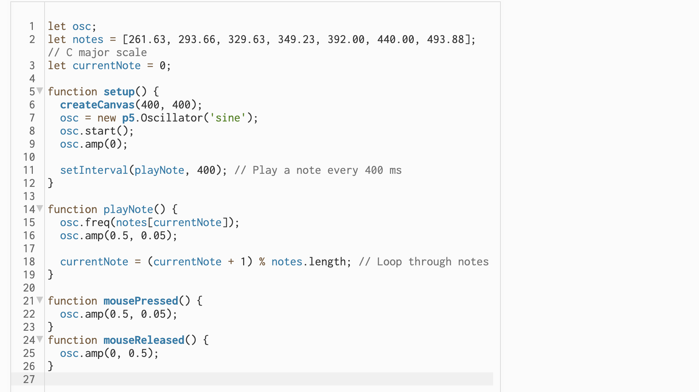
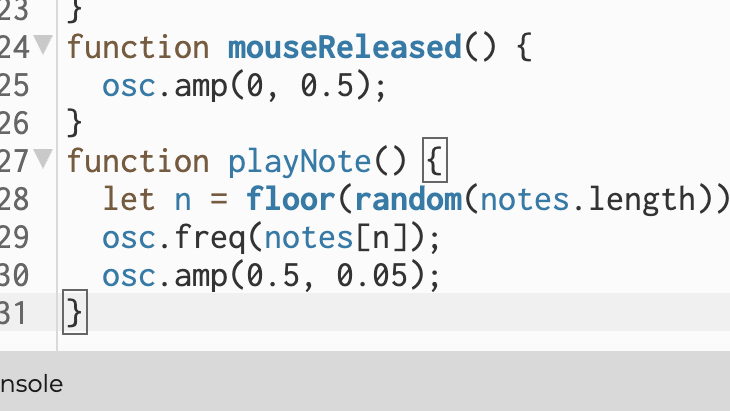

This week, the task was to create a musical algorithmic pattern using p5.js. Before starting with p5.js, I experimented with Strudel, a browser-based live coding tool for music inspired by TidalCycles.
I wrote a simple music pattern in Strudel:
$: note("c6, bb3 g3 [bf3 c4]").s("piano").fast(2).pan(0).color('lightblue')
$: note("c2, ac3 g3 [f3 c4]").s("piano").slow(2).pan(1).color('lightgreen').spiral()
note("c6, bb3 g3 [bf3 c4]").fast(2)This code generates two melodic lines:
- The first is a faster, higher-pitched pattern panned to the left.
- The second is a slower, lower-pitched pattern panned to the right, with a spiral effect.
I also used the fast(2) function to double the speed of the first sequence, inspired by what we learned about manipulating patterns through simple transformations like speed change and layering.
Inspirations
My inspiration for this work came from a combination of:
- Early Algorithmic Composition: Musical Dice Game, where randomness and simple rules are used to generate music.
- Contemporary Live Coding: Artists working with TidalCycles and Algoraves who create music algorithmically in real time.
- Minimalism and Repetition in Music: The idea that repetition combined with small changes can keep the listener engaged, an idea discussed in class and common in works by composers like Steve Reich.
In my Strudel piece, I explored repetition, slight variations (different note groups, speeds), and stereo panning to create movement across the left and right channels.
Moving to p5.js
The final requirement is to recreate an algorithmic musical pattern in p5.js., so I delved into learning how to use p5.js to combine sound and graphics for visualizing music. At first, my code was very simple mainly using p5.Oscillator to generate notes in the C major scale, playing them one after another every 400 milliseconds. At this stage, the program only looped through notes sequentially with no visual effects, just pure sound.

After, I made the first improvement which is instead of playing notes in a sequential loop, I changed them to play randomly. This made me realize that randomness can inject more “vitality” into the sound, each playback carries uncertainty, making people more eager to anticipate what the next note will be and more likely to stay engaged.

Finally, I introduced a “spiral” visualization effect. I added a points array, and every time playNote() plays a new note, the program calculates a new spiral point and adds it to the array. The point’s theta and radius control its position on the spiral, while its frequency information maps to color (using the HSB hue model) and size. Thus, low-frequency notes appear as cool-colored small dots, while high-frequency notes show as warm-colored large dots. The entire scene uses a semi-transparent background to continuously “erase” old points, creating a sense of flow.
Final code:
let osc;
let notes = [261.63, 293.66, 329.63, 349.23, 392.00, 440.00, 493.88]; // C major scale
let currentNote = 0;
let points = []; // 保存螺旋的点(save the dot on the spiral)
function setup() {
createCanvas(600, 600);
osc = new p5.Oscillator('sine'); //创建一个sine波振荡器（Create a sine wave oscillator）
osc.start();
osc.amp(0); //初始时音量为0（Initial volume = 0)
setInterval(playNote, 400); // Play note every 400 ms
colorMode(HSB, 360, 100, 100);
background(0);
}
function playNote() {
let n = floor(random(notes.length));
let freq = notes[n];
osc.freq(freq);
osc.amp(0.5, 0.05);
let theta = points.length * 0.3;
// 每个点的角度(Angle of each point)
// θ角度 = 当前点的数量 * 0.3（控制螺旋的紧密度）(θ angle = number of current points * 0.3 (controls the tightness of the spiral))
// 比如：第1个点是 0.3 弧度，第2个点是 0.6 弧度...(For example: the 1st point is 0.3 radians, the 2nd point is 0.6 radians...)
let radius = 20 + points.length * 2;
// 半径 = 20 + 当前点数量 * 2(Radius = 20 + number of current points * 2)
// 随着点数增多，半径越来越大 → 形成螺旋往外扩的效果(As the number of points increases, the radius becomes larger → creating an effect of the spiral expanding outward)
points.push({
theta: theta, // Save the angle
radius: radius, // Save the radius
freq: freq // Save the frequency for color/size mapping
});
// 只保留一定数量的点，避免太卡(Keep only a certain number of points to avoid lag)
if (points.length > 200) {
points.shift();
}
}
function draw() {
translate(width / 2, height / 2); // 画布中心为坐标中心(The center of the canvas is the coordinate center)
noStroke(); // No outline
// 画螺旋(Draw spiral)
for (let i = 0; i < points.length; i++) {
let p = points[i];
let x = p.radius * cos(p.theta);
// x-coordinate = radius * cos(angle)
// This horizontally offsets the points along the spiral path
let y = p.radius * sin(p.theta);
// y-coordinate = radius * sin(angle)
// This vertically offsets the points along the spiral path
// 根据音频频率映射颜色 & 大小
let hue = map(p.freq, 261.63, 493.88, 0, 360);
// Map frequency (261.63 ~ 493.88) to hue (0~360 degrees) in HSB color
// Lower frequencies are cool colors, higher frequencies are warm colors
let size = map(p.freq, 261.63, 493.88, 5, 20);
// Map frequency to point size (lower frequency → smaller point, higher frequency → larger point)
fill(hue, 80, 100);
ellipse(x, y, size, size);
}
}Summary
This exercise not only helped me understand the relevance between sound and images but also made me realize that “sense of structure” and “sense of rhythm” should be considered when designing visualization. In the future, I hope to try making this spiral not just passive visualization, but able to respond to user interactions (such as changing the shape of the spiral when clicked).